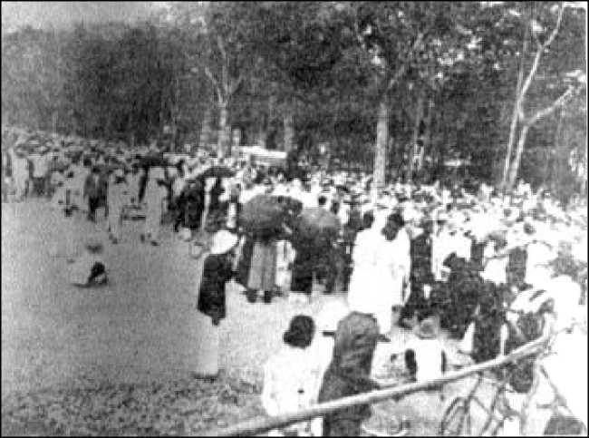
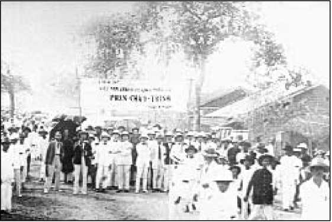
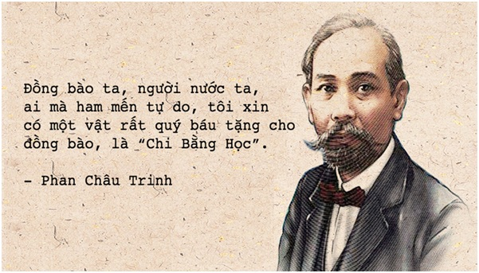
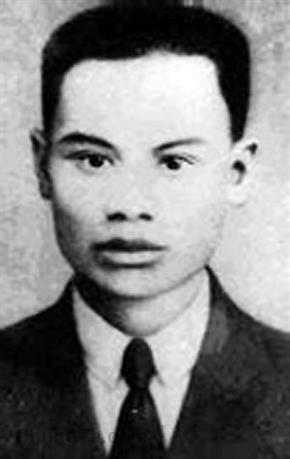
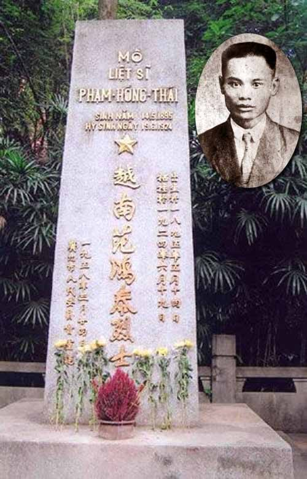
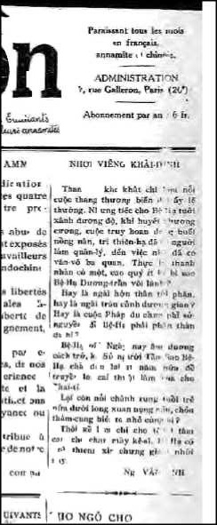
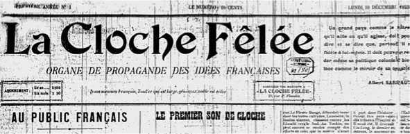

Ngày 23 tháng 11, đám người nhiệt tình và sôi nổi bao quanh Tòa Án Hà Nội, khi mở phiên tòa xử ông già phiến loạn, Phan Sào Nam, người đã bị kết án tử hình vắng mặt vào năm 1913 khi xảy ra vụ ném bom ở Hà Nội. Đứng trước các quan tòa, bị cáo tuyên bố:
Thành thực mà nói, tôi tự nhận đã có âm mưu chống lại vua của tôi nhằm lật đổ chế độ Quân Chủ, tạo nên một nước Việt Nam Cộng Hòa.
Tôi cũng tự nhận đã có nhiều nỗ lực, bằng lời nói và cây bút, để thức tỉnh đồng bào tôi một tấm lòng yêu nước mà từ trước chưa có, đã phê phán chính phủ bảo hộ trong bước đầu của giai đoạn lưu đày và trách cứ họ để cho nước Nam ngập ngụa trong vòng ngu tối; tôi cũng tự nhận quá nghiêm khắc đối với quan trường và trách cứ họ về những sự nhũng lạm thái quá. Nếu như các ông thấy rằng những hành động của tôi xứng đáng phải tôi chết, thì hãy lấy đầu tôi đi, tôi sẽ sẵn lòng rơi đầu cho các ông bởi đã từ lâu tôi đã tự biến thân mình phục vụ cho lý tưởng của mình. Tôi đã hăng say tranh đấu vì hạnh phúc của tổ quốc tôi, của dân tộc tôi, song chưa hề một phút nào đi chệch khỏi phẩm chất của tôi. (34).
Việc kết án tử hình Phan Bội Châu, mặc dù đã giảm xuống thành án khổ sai chung thân, khích động giáo viên và học sinh rầm rộ bãi công, biểu tình tuần hành ở Trung Kỳ và Bắc Kỳ, nhất là ở Hà Nội, Hải Phòng và Huế. Truyền đơn, điện tín đòi tha Cụ Phan tung ra khắp nơi. Nhiều bà cao tuổitập trung đông nghẹt trên con đường nơi xe chởToàn Quyền đi qua, họ quỳ xuống, xin ân xá Cụ Phan.
Tại Nam Kỳ, cái tên Phan Bội Châu chưa được thanh niên biết đến nhiều. Cuộc du hành chớp nhoáng của Phan vào năm 1904 tới Sài Gòn rồi tới Lục Tỉnh, đến tận cùng Thất Sơn gần Châu Đốc, chỉ để lại dấu vết trong tâm trí của những người lớn tuổi hoạt động trong hội của Cường Để. Thế nhưng, qua bài tường thuật tỉ mỉ và nhắc lại cuộc đời hăng say hoạt động của ‘’Cụ Phan Sào Nam’’ (bút danh của Phan Bội Châu), tờ Đông Pháp Thời Báo đã làm cho các tầng lớp nhân dân xúc động đặc biệt là đối với những thanh niên cấp tiến. Báo Chuông Rè, sau hai mươi tháng im tiếng, lại được Nguyễn An Ninh tung ra vào ngày 25 tháng 11, phát động chiến dịch bảo vệ Phan Bội Châu. Khi Alexandre Varenne đã thả Phan Bội Châu vào ngày 24 tháng chạp 1925, báo ấy kêu gọi lạc quyên giúp ông, mọi tầng lớp nhân dân khắp nơi đều hưởng ứng nhiệt liệt.
Bị quản thúc ở Huế, Phan Bội Châu sống trong cảnh khó khăn. Với số tiền lạc quyên, ông dựng một túp lều bên bờ sông Hương. Thời gian đầu ông dạy chữ Quốc Ngữ và chữ Nho cho các trẻ em. Nhưng sau đó các phụ huynh đã phải ngăn không cho con đến học, do sức ép ngầm của Sở Mật Thám. Thiếu sự giúp đỡ của những người có cảm tình, ông phải sống một cách chật vật, đôi khi nhà cửa trống trơn. Trong số những thanh niên gần gũi để học tập tấm gương một thời đã quên mình vì đại nghĩa, ta thấy có con rể của ông là Vương Đức Cảnh, phụ trách bí mật Đảng Thanh Niên ở Trung Kỳ; Thư Ký của ông là Phan đăng Lưu, (sẽ bị bắn vì là cộng sản vào năm 1940); Phan Văn Hùm (sẽ bị những người thuộc đảng của Nguyễn ái Quốc ám sát năm 1945).
Phan Bội Châu mất ngày 29 tháng 10 năm 1940, để lại nhiều bài thơ, một cuốn phê phán Đạo Khổng, Khổng Học Đăng, và tập hồi ký Tự Phán, viết trong mười lăm năm cuối đời.
Mùa Xuân Sài Gòn, tháng 3-4 năm 1926
Ngày 30 tháng 11 năm 1925, trên tờ báo Chuông Rè của anh, Nguyễn An Ninh lên án chính sách Pháp-Việt hợp tác của Đảng Lập Hiến trong bài: ‘’Người ta chỉ hợp tác với những người bình đẳng’’. Ngay từ trước, ngày 19 tháng 5 năm 1924, anh đả viết ‘’chỉ nên trông cậy nơi mình’’:
Tại Nam Kỳ, chúng ta có mảnh đất hợp pháp mà trong những phạm vi giới hạn của nó chúng ta có thể hoạt động được nhiều. Chúng ta có quyền mạnh dạn công bố ở xứ này những nguyên tắc căn bản của Tuyên Ngôn Nhân Quyền và Dân Quyền, từ mục đầu tiên nói rằng: Người ta sinh ra ở đời đều có quyền tự do và bình đẳng về công quyền, cho tới mục cuối cùng, mục này công bố bổn phận người công dân nào bị người xâm phạm quyền là phải đứng lên cầm vũ khí chống lại những kẻ áp bức vi phạm quyền của mình. Tự do là phải giành lấy chứ không phải là do người ta thỏa thuận cho. Muốn giành lấy tự do trong tay một cường lực có tổ chức thì phải có một lực lượng đối lập có tổ chức.
Ngày 14 và 24 tháng chạp, anh xác định lập trường đối với chủ nghĩa Gandi và chủ nghĩa quốc tế:
Hiện nay chỗ nào cũng thấy người An Nam nói tới chủ nghĩa Gandi. Tốt thôi. Tuy nhiên, ta phải công nhận rằng chúng ta đang rạp mình trước những kẻ áp bức, trong khi đó chủ nghĩa Gandi khuyên chúng ta phải chống đối bằng một tinh thần kiên trì thụ động nhưng tự hào, biểu lộ được ý thức về nhân phẩm của mình. Quả vậy, Gandi đã tuyên bố rằng: ‘’Ở nơi nào phải lựa chọn giữa sự hèn nhát và bạo động, tôi khuyên nên bạo động. Tôi mong muốn được nhìn thấy một nước Ấn Độ tự do bằng bạo động mà giành được còn hơn là chịu xiềng xích nô lệ dưới bạo lực của những kẻ thống trị.’’
Thế giới đang tiến về chủ nghĩa quốc tế như một con thuyền trôi trên một dòng nước mạnh không sao cưỡng lại nổi. Và chủ nghĩa quốc tế không thể có được nếu không có chủ nghĩa quốc gia. Trước hết các chủng tộc lạc hậu phải thành lập các quốc gia, các dân tộc bị nô lệ bởi bạo lực phải được giải phóng, để cho mọi người và mỗi người có thể đóng góp phần mình một cách tự do tạo nên sự hài hòa của chủ nghĩa quốc tế.
Vào đầu năm 1926, ngọn gió lành do Nguyễn An Ninh thổi lên bị giới thực dân coi như một trận cuồng phong. Thanh niên Sài Gòn thức tỉnh làm sai lạc những dự đoán của Cognacq: Cái hạt mà y cho rằng không thể nảy mầm được đã lặng lẽ ló ra khỏi mặt đất.
Nhóm dân nhỏ bé ở Sài Gòn hưởng ứng một cách không e ngại lời kêu gọi của Ninh, họ tham dự cuộc mít ting phản đối ở phố Lanzarotte, họ tuần hành ra tận cảng để đón tiếp ông Bùi Quang Chiêu ‘’người đã đòi những cải cách’’, và tham gia đám tang Phan Chu Trinh, con người vì dân vì nước. Nhưng chúng ta hãy theo dõi sự kiện từng bước.


Đám táng Phan Châu Trinh, Sài Gòn 1926: -Nhóm Jeune Annam
Ngày thứ bảy 20 tháng 3, Phan Chu Trinh đang hấp hối, truyền đơn tung ra giữa ban ngày ở Sài Gòn, ký tên Dejean de la Bâtie và Nguyễn An Ninh. Tờ truyền đơn kêu gọi một cuộc tập hợp tại Vườn Xoài để phản đốiviệc trục xuất nhà báo Trương Cao Động về Trung Kỳ. Ngày hôm sau, lính mả tà và mật thám tràn ngập phố Lanzarottetừ sớm. Vào lúc 8 giờ, thợ thuyền, nhân viên, học sinh, viên chức lũ lượt kéo đến, không tỏ ra e ngại chút nào. Báo Chuông Rè ngày 23 tường thuật lại như sau:
3.000 người An Nam đã tới dự cuộc mít ting. Miếng vườn lớn của Bà Đốc Phủ Tài tràn ngập người. Có chỗ chật ních như nêm cứng người lại với nhau. Trên khóm cây xoài, những trùm người làm trĩu cả cành. Có khoảng 600 người là học sinh các Trường Chasseloup Laubat, trường sư phạm, trường tư. Thợ thuyền cũng chiếm một lượng tương đương. Chủ tịch: Ông Lê Quang Liêm, tục gọi ông Bảy, lập hiến; cùng với ông Trương Văn Bền, tư vấn Hội Đồng Lập Hiến Thuộc Địa, và ông Phan Văn Trường, Luật Sư, Giám Đốc báo Chuông Rè. Với tư cách người tổ chức chính, ông Dejean de la Bâtie phát biểu đầu tiên.
Ông Nguyễn An Ninh đọc bài diễn văn cuối cùng. Ông Ninh thấp bé mà bục không cao lắm, thế nên những người tham dự đề nghị ông đứng lên chiếc ghế dựa để mọi người thấy mặt.
Quyết nghị: Ba ngàn người An Nam sau khi đã nghe ông Dejean de la Bâtie, Nguyễn Pho, Nguyễn An Ninh, Phan Văn Lang vá các thư ký của Đảng An Nam Thanh Niên, nhận thấy rằng việc trục xuất những người An Nam gốc ở Bắc Kỳ và Trung Kỳ ra khỏi lãnh thổ Nam Kỳ là một hành động độc đoán, kịch liệt phản đối sự lạm quyền quá đáng đó, đặc biệt đối với việc trục xuất ông Trương Cao Đông, kiên quyết đòi chính phủ Pháp phải tôn trọng ở Đông Dương những quyền tự nhiên bất khả xâm phạm thuộc nhân quyền và dân quyền đã được Hiến Pháp nước Cộng Hòa Pháp công nhận, nhất là quyền tự do báo chí xuất bản bằng chữ Quốc Ngữ, hủy bỏ việc giam câu lưu về dân sự tố tụng và thương mại, bảo đảm quyền tự do giáo dục, hội họp và du hành.
Vào lúc 10 giờ cuộc mít ting giải tán trong tiếng hô vang An Nam vạn tuế!
Dejean de la Bâtie.
Ngày 24, Dejean, Nguyễn An Ninh bị bắt cùng Lâm Hiệp Châu, phóng viên tờ Đông Pháp Thời Báo. Phải chăng chính quyền thuộc địa muốn ngăn chận quyết liệt mọi cuộc phản kháng, dù là hợp pháp? Cũng ngày hôm đó, chính quyền thực dân đã phải há mồm ngạc nhiên mà ngó dân chúng Sài Gòn tuần hành biểu tình lần đầu tiên trên đường phố.
Do sáng kiến của Đông Pháp Thời Báo và Trịnh Hưng Ngẫu (Đảng An Nam Thanh Niên), nhiều truyền đơn tung ra mời dân chúng chuẩn bị tiếpđón Bùi Quang Chiêu từ Pháp trở về ngày 24 tháng 3. Tạ Thu Thâu, một trong những người tổ chức Đảng An Nam Thanh Niên, về sau viết:
Hầu hết chúng ta đều không ưa gì thái độ ôn hòa của Bùi Quang Chiêu. Song vấn đề không phải ở đó. Những nghị lực dồn nén cần phải được biểu lộ, và đây là một lý do quyết định khiến chúng ta, những thanh niên trẻ, không cần lẩn tránh (La Vérité 18.4.1930).
Từ lúc 18 giờ, lối vào Cảng Messagerie maritimes, và các phố dẫn tới đó đông nghịt người, và đám đông ngày càng lớn hơn sau giờ đóng cửa các công sở, cửa hàng và xưởng thợ. Dân ở các tỉnh kéo về tập trung tại mé sông Quai de Belgique (Bến Chương Dương)từ Cột Cờ Thủ Ngữ (Mât des Signaux) cho tới Câu Mống và trên cầu quay Khánh Hội, đen nghẹt người. Từng chùm người bám vào dãy rào chắn trên cầu. Nhưng con tàu mãi đến 21 giờ mới xuất hiện. Nhiều thanh niên đeo băng vàng và khoảng 800 dân thợ Sở Thủy Binh Ba Son đi bảo vệ quanh Bùi Quang Chiêu, được đám đông chào đón một cách im lặng. Trong khi đó những kẻ phá phách biểu tình do De Lachevrotière, Giám Đốc báo Trung Lập (L'Impartial), điều động, hô vang lên ‘’Giết chết nó đi!’’. Hai lần thằng nầy cố tìm cách đá vào người ‘’quan lớn’’ Chiêu, nhưng hắn thình lình bị Trịnh Hưng Ngẫu đá đít gạt ra.
Từ trong đoàn người đi hộ tống Bùi Quang Chiêu qua các phố cho tới trụ sở của Đảng Lập Hiến ở đường De Lagrandière vang lên những lời hô đồng loạt: ‘’Hãy thả Nguyễn An Ninh!’’. Nhưng thật là điều vô ích khi người ta hy vọng Bùi Quang Chiêu can thiệp để Nguyễn An Ninh được thả ra. Trong một bức thư Bùi Quang Chiêu gửi cho bạn mình, y tỏ ra lo ngại không phải về sự bắt bớ Ninh, y lo ngại ‘’dân An Nam thức tỉnh’’, lớp ‘’thanh niên quá khích và kém giáo dục’’ thức tỉnh. Ông ta dự định ép họ vào ‘’khuôn khổ ở ăn nề nếp’’. Cũng ngày 24 tháng 3 đó, Phan Chu Trinh mất. Tin đó làm tăng xúc động dân chúng, họ đã dấy lên từ vụ bắt Nguyễn An Ninh. Phan Tây Hồ - người Sài Gòn hay dùng từ đó để chỉ Phan Chu Trinh - bị bệnh lao làm hao mòn sau mười tám năm tù ngục và lưu đày, đã thở hơi cuối cùng. Mọi người cảm thấy sự mất mát này như một điều bất hạnh. Hưởng ứng lời kêu gọi của Đông Pháp Thời Báo, hàng ngàn người, nam giới, phụ nữ, thanh niên, thuộc đủ mọi tầng lớp cứ diễu hành hàng tuần trước thi hài của người quá vãng, trước bàn thờ khói hương nghi ngút đặt tại 54 phố Pellerin (Pasteur).
Bắt đầu từ 6 giờ sáng ngày chủ nhật mồng 4 tháng 4, phố Pellerin và các phố lân cận tràn ngập người tập hợp. Quanh linh cữu, nhóm thanh niên thuộc Đảng An Nam Thanh Niên đeo băng trắng mở đầu đoàn tang lễ. Họgiương lên biểu ngữ lớn ‘’Cách mạng An Nam muôn năm!’’. Rồi đến học sinh các trường ở Sài Gòn và các tỉnh, dân thợ và thơ ký sở Ba Son, thợ và phu khuân vác các nhà máy xay lúa Chợ Lớn rời bỏ công việc, rồi đến nông dân Bà Điểm, Hóc Môn những địa điểm nổi danh về tinh thần phản kháng...
Những người tổ chức có mặt cả ở đó và người ta thấy dự tang nhiều người từ Bắc Kỳ, Trung Kỳ vào, các Tỉnh Nam Kỳ đến, với hàng trăm khăn tang trắng và những dòng chữ kính viếng Phan Tây Hồ. Làn sóng người yên lặng đổ vào Đại Lộ Norodom, diễu qua Dinh Toàn Quyền, rồi vượt lên phố Paul Blanchy (Hai Bà Trưng) để tiến về nghĩa trang những người quê quán Gò Công tại Phú Nhuận.
Trong số thư cùng tang trướng gửi lời từ biệt, có bức của Nguyễn An Ninh từ trong tù gửi ra, gợi lại cuộc đấu tranh chung chống bất công và áp bức; có thư của Phan Bội Châu, từ nơi quản thúc ở Huế gửi vào - không còn đối lập quan niệm chinh phục độc lập bằng bạo lực với kế hoạch thu hồi xứ sở bằng cách thấm nhuần sâu sắc về văn hóa và kiên trì của Phan Chu Trinh. Đó là một bài ca thắm thiết tình huynh đệ đối với tinh thần đấu tranh bền bỉ của người đã khuất để cứu giống nòi ra khỏi cảnh ‘’bần cùng lạc hậu’’.
Ba tấc lưỡi nào gươm nào súng, nhà cầm quyền trông giộ đã gai ghê,
Một ngôi lòng vừa trống vừa chiêng, cửa dân chủ, treo đèn thêm sáng chói.
Trước đã giỏi thời sau nên giỏi nữa, dấu Cộng Hòa xin ráng sức theo đòi,
Thác còn thiêng thời sống phải thiêng hơn, độc lập quyết đều tay xin vói!
Đứng trước mộ Cụ Phan, Bùi Quang Chiêu đọc bài điếu văn, chỉ định một cách quá đáng Phan Chu Trinh là người đề xướng tinh thần Pháp-Việt đề huề. Huỳnh Thúc Kháng, bạn chiến đấu của Phan, cũng bị bắt và đày ra Côn Đảo năm 1908, nhấn mạnh tinh thần bền bỉ của một con người suốt một đời đấu tranh chống đế quốc áp bức, triệt hạ phong kiến, hy sinh vì nhân quyền.
Nguyễn An Ninh bị bắt, Phan Văn Trường phụ trách tờ Chuông Rè từ số 52. Ông đưa vào tờ báo một tiêu đề bằng câu nói của Mạnh Tử bằng chữ Hán và lời dịch bằng chữ Pháp: Dân vi quí, xã tắc thứ chi, quân vi khinh. Ông tiếp tục in trường kỳ bản tuyên ngôn của đảng cộng sản, cùng với lời kêu gọi về triển vọng một thế giới mới: ‘’Vô sản toàn thế giới, đoàn kếtlại!’’. Vào thời kỳ này, ở Pháp, bản tuyên ngôn của Karl Marx và Engels được phổ biến rộng rãi in ra sách nhỏ rẻ tiền. Nó không chứa đựng điều gì làm choáng váng đầu óc của tầng lớp thanh niên trí thức An Nam. Trong đó hai tác giả bản tuyên ngôn dự kiến cách mạng thợ thuyền trong các xứ kỹ nghệ tiền tiến như Anh, Pháp, Đức, là điều dường như chưa thiệp cập tới một xứ An Nam còn đang ở trong tình trạng kinh tế tự nhiên tự túc, và chương trình quá độ sơ thảo trong tuyên ngôn có thể làm cho những thanh niên đầy cao vọng phải suy nghĩ.
Trong một xứ mà giai cấp vô sản vừa mới hình thành, những từ ngữ khẩu hiệu như: Chủ nghĩa xã hội, chủ nghĩa quốc tế vô sản, đoàn kết vô sản, đôi khi mịt mờ như đám mây sao lóng lánh giữa trời đêm đối với người nghe, nhưng cũng mang lại nhiều điều mơ mộng. Những tên tuổi như Phan Bội Châu và Phan Chu Trinh luôn luôn làm xúc động trong lòng, nhưng thời đại đã thay đổi màu sắc. Nếu như chủ nghĩa quốc gia còn đáp ứng được với thống trị thực dân, thì người ta cũng đã thấy le lói một điều là một khi giành được độc lập, con đường có thể mở ra để xây dựng một xã hội thân ái trong đó tầng lớp dân cày nghèo, phu phen công nhựt và thợ thuyền không còn phải chịu thống khổ vì đói nghèo, và thế là cái ‘’quái tượng của chủ nghĩa cộng sản’’ bắt đầu ám ảnh xã hội thuộc địa.
Phan Văn Trường mở rộng bộ biên tập khi tờ La Cloche Fêlée (Chuông Rè) đổi thành tờ L'Annamkể từ ngày 1 tháng 5, mời những cộng tác viên không đồng xu hướng nhập vào, trong đó bên cạnh Dejean de la Bâtie có Tạ Thu Thâu, Trịnh Hưng Ngẫu, Nguyễn Khánh Toàn, Diệp Văn Kỳ...
Tờ báo tố cáo ‘’cái trò Pháp Việt đề huề’’:
Không một lời hứa nào được thực hiện, không một cải cách nào được tiến hành chỉ trừ những cái, nếu được coi như xếp vào loại cải cách: Tăng số công chức ngồi không để lãnh lương, cung cấp thêm những ưu quyền công phẫn, tăng thêm thuế má, tạo thêm những khoản đóng góp mới, những hoang phí và nhiều loại tước đoạt dân bản xứ. Trước khi nói tới hợp tác đáng lẽ phải xét xem nó có thể thực hiện được không. Rất nhiều người An Nam vẫn còn chạy theo cái bóng ma hợp tác đó. (35)
Trong tờ L'Annamngày 16 tháng 9, Tạ Thu Thâu luận chiến cùng Paul Monet, về cùng một đề tài này:
Sự hợp tác được thực hiện ở Đông Dương đó là sự hợp tác giữa vài ngàn người Pháp với vài ngàn người An Nam đầy tham vọng và đãmất phẩm chất người An Nam. Vì dân tộc An Nam là một dân tộc nô lệ bị khóa mồm nhân cách tinh thần của họ là không tồn tại, thế thì sự hợp tác Pháp Việt chỉ là một trò hề.
Tờ L'Annamxuất bản cho tới tháng 2 năm 1928, trong thời gian cách quãng từ tháng 8 đến tháng chạp năm 1927. Báo đình bản hẳn khi Phan Văn Trường bị kết án vào ngày 27 tháng 3 năm 1928 hai năm tù vì đã ‘’ kêu gọi khêu khích quân lính bất tuân lịnh nhằm mục đích tuyên truyền vô chính phủ’’. Tòa Thượng Thẩm Sài Gòn xác nhận bản án ngày 11 tháng 5. Mặc dầu Trường chống án ở tòa phá án ở Paris, rồi sang Pháp vào tháng 6 để tự bảo vệ, ông bị cảnh sát đến bắt tại nhà, 11 phố Blainville, Paris 5e, và tống giam tại nhà ngục Clairvaux. Chúng ta sẽ không nghe thấy nói về ông nữa cho tới khi ông mất ở Hà Nội vào tháng 5 năm 1933.

Ta hãy trở lại tháng 4 năm 1926. Ngày 24 bắt đầu xử vụ Nguyễn An Ninh. Cảnh sát và lính lưu động kiểm soát cổng Tòa Án Sài Gòn; trong hội trường, nhân viên Sở Mật Thám nhiều hơn khán giả được phép vào. Ninh xuất hiện trong bộ quần áo bà ba đen và tự bào chữa, anh yêu cầu hai luật sư của anh là Gallet và Lefèvrekhông nên xin khoan hồng cho anh. Anh không cần đến sự khoan hồng mà đòi phải có sự công bằng. Anh bị kết án hai năm tù vì ‘’những hành động phiến loạn’’, sau đó án này giảm còn 18 tháng.
Khắp xứ lại xúc động lên, giới học sinh lại nổi lên bãi khóa để phản đối. Cũng như sau khi Nguyễn An Ninh bị bắt lại có những cuộc bãi khóa ở trường nữ sinh áo tím Sài Gòn, ngày 28 tháng 3, ở Trường Đạo Taberd ngày 1 tháng 4, ở Trường Tiểu Học Phú Lâm (Chợ Lớn) ngày 12..., thì sau khi Ninh bị kết án, học sinh bỏ học hàng loạt tại 16 trường lớn ở Sài Gòn, Cần Thơ, Bến Tre, Mỹ Tho, Vĩnh Long...Từ tháng 3 đến tháng 5 năm 1926 hơn một ngàn học sinh bị đuổi học.
Sau này, Tạ Thu Thâu viết trong tờ Sự Thật (La Vérité) ở Paris ngày 1 tháng 5 năm 1930:
Nếu như người ta biết chúng ta đã biểu dương những lực lượng nào để đòi thả Ninh vào thời kỳ ấy! Chúng ta đã nghĩ đến những giải pháp cách mạng nhất. Tổng bãi công! Tổng bãi công trong khi lực lượng thợ thuyền và thơ ký chưa hề được tổ chức và trong khi chúng ta mới chỉ liên hệ được với một vài công nhân Sở Bưu Điện, Truyền Thanh và Xưởng Thủy Binh Ba Son.
Được thả ra khỏi tù có điều kiện vào tháng giêng năm 1927, Nguyễn An Ninh xuống tàu sang Pháp. Tại Paris, anh gặp lại Nguyễn Thế Truyền, lãnh tụ Đảng Việt Nam Độc Lập.
Còn Đảng An Nam Thanh Niên có một đời hoạt động ngắn ngủi. Điều lệ và tuyên ngôn của đảng này chỉ đến 20 tháng 5 năm 1926 mới được đăng tải trên tờ Tiếng Vọng Nhà Nam (L'Écho Annamite). Đảng này hô hào đấu tranh đòi nhân quyền và dân quyền cho người An Nam ở giai đoạn đầu tiên. Trong tờ Sự Thật vừa kể trên, Tạ Thu Thâu nhắc lại việc thành lập và kết thúc của nhóm tổ chức tí hon này, coi như một ‘’sự điên cuồng thời niên thiếu’’:
Trong mấy năm cuối cùng của tôi ở trường trung học (1923-1925), phong trào cách mạng nổi lên rầm rộ. Chúng tôi đọc báo cấm giữa giờ học, tổ chức họp kín vào những buổi ra chơi. Sau những cuộc hội thảo bất tận, chúng tôi đi đến một kết luận cụ thể: Phải tập bắn súng, tất cả chúng tôi đi theo khuynh hướng khủng bố. Chúng tôi chỉ có hai ý tưởng: Ám sát cá nhân và xây dựng một đội quân ở Trung Quốc để phục hồi nền độc lập. Sau này vụ án Phan Bội Châu, vụ Trương Cao Đông đã cung cấp cho chúng tôi những dịp tốt để cổ động. Lực lượng của chúng tôi được tập hợp, rồi kết tinh thành Đảng An Nam Thanh Niên vào đầu năm 1926. Trong vòng 3 ngày chúng tôi mộ được hơn một trăm đảng viên, không kể hàng ngàn người cảm tình.
Trên kia chúng ta đã thấy Đảng An Nam Thanh Niên hoạt động như thế nào trong dịp tiếp đón Bùi Quang Chiêu và đưa tang Phan Chu Trinh. Khẩu hiệu tổng bãi công vào ngày 4 tháng 5 do truyền đơn tung ra, coi như tiếng hát tống chung của đảng.
Nhiều đồng chí bị xét nhà. Những kẻ do dự rời chúng tôi, và chúng tôi lánh xa những người bạn nghi ngờ hoặc khiêu khích. Trong cuộc họp cuối cùng chúng tôi chỉ còn có 6 người. Nhóm tự tan rã. Một bộ phận lẩn vào những nhóm nghiên cứu, một số ẩn vào đạo Cao Đài, một thứ tôn giáo mà bọn linh cảm thần bí ấy hy vọng tìm chỗ nương dựa trong cuộc đấu tranh.
Tạ Thu Thâu thêm rằng anh kể lại việc đó chỉ cốt chứng minh một chủ nghĩa quốc gia chủ quan và lãng mạn sẽ chẳng đem lại hiệu quả gì, mà cần phải có một lý tưởng cách mạng và một tổ chức cách mạng.


Mộ Liệt Sĩ Phạm Hồng Thái (1895-1924) tại công viên Hoàng Hoa Cương Mộ tại Quảng Châu với đài chữ ‘’Việt Nam Phạm Hồng Thái Liệt Sĩ chi mộ’’
(越南范鸿泰之墓)
Phạm Hồng Thái
(1896-1924)
Cuộc bầu cử Hội Đồng Quản Hạt tháng 10 năm 1926, Đảng Lập Hiến thắng cử, đó là một đảng đại diện cho tầng lớp tư sản địa chủ An Nam, đứng đầu là Bùi Quang Chiêu và Nguyễn Phan Long. Tạ Thu Thâu và Nguyễn Khánh Toàn phản ứng lại bằng cách tung ra tờ báo Le Nhà Quê từ 1 tháng giêng năm 1927, nhưng lập tức bị cấm trước khi phát hành:
Trước những lời xa hoa của những người đàn anh, lớn tuổi nhưng không phải lớn về tinh thần phương pháp, từ nay chúng tôi để ngoài tai, và chính là nhờ vượt khỏi sự bảo trợ của họ chúng tôi sẽ thực hiện được nhiệm vụ của mình.
Nhóm chủ chốt Đảng An Nam Thanh Niên không lìa cuộc chiến đấu. Hà huy Giáp ở lại Nam Kỳ, gia nhập bí mật Thanh Niên Cách Mạng Đồng Chí Hội rồi vào đảng cộng sản Đông Dương năm 1930; Bùi Công Trừng và Nguyễn Khánh Toàn sẽ sang học tại Trường Staline ở Moscou; còn Trịnh Hưng Ngẫu cùng Tạ Thu Thâu sẽ theo chân Nguyễn An Ninh và Nguyễn Thế Truyền ở Pháp.ù


CHÚ THÍCH
23.- Léon Werth, Cochinchine (Nam Kỳ), Paris 1926, trang 52. Bản chữ Quốc Ngữ trong Phương Lan, Nhà Cách Mạng Nguyễn An Ninh, Sài Gòn 1970, trang 12-33.
24.- Léon Werth, Cochinchine (Nam Kỳ), Paris 1926. Bản chữ Quốc Ngữ trong Phương Lan, Nhà Cách Mạng Nguyễn An Ninh, Sài Gòn 1970, trang 160.
25.- Léon Werth, Cochinchine (Nam Kỳ), Paris 1926. Bản chữ Quốc Ngữ trong Phương Lan, Nhà Cách Mạng Nguyễn An Ninh, Sài Gòn 1970, trang 162.
26.- Léon Werth, Cochinchine (Nam Kỳ), Paris 1926. Bản chữ Quốc Ngữ trong Phương Lan, Nhà Cách Mạng Nguyễn An Ninh, Sài Gòn 1970, trang 35.
27.- Đó là tại khách sạn Victoria trên Đảo Sa Diện. Phạm Hồng Thái bị chết đuối tại sông Châu Giang khi chạy trốn. Hai tháng sau, Phan Bội Châu trở lại Quảng Châu ‘’để dựng bia trên tấm mộ của người anh hùng’’. Phạm Hồng Thái (31 tuổi) là hội viên Tâm Tâm Xã, một tổ chức có những người sáng lập chủ yếu là Lý Hồng Sơn, Hồ Tùng Mậu, Lâm Đức Thụ, Lý Hồng Phong, một năm sau tổ chức này trở thành trụ cột của Đảng Thanh Niên của Nguyễn ái Quốc. Một giảng viên tại Trường Quân Sự Hoàng Phố đã giúp Tâm Tâm Xã chế bom (Phan Bội Châu, Tự Phán, trang 211).
28.- Việc giáo dục đại chúng ở Đông Dương chỉ được chính phủ thuộc địa ban hành từng giọt, các số liệu sau đây ở Nam Kỳ chứng minh. Năm 1904, có 6.700 học sinh với 64 giáo viên người Pháp có bằng Tú Tài hoặc bằng Trung Học; 121 giáo viên bản xứ và 27 giáo viên các tỉnh; 20 năm sau có 72.809 học sinh (62.603 nam sinh và 10.206 nữ sinh) với 125 giáo viên người Pháp và 371 giáo viên bản xứ. 9/10 trẻ em trong độ tuổi đi học không được nhập trường vì không có lớp. Toàn Quyền Martial Merlin đã thú nhận vào năm 1924 là trong số hai triệu trẻ em trong độ tuổi đi học, các trường công chỉ đủ chỗ cho 200.000. (Georges Garros, Forceries humaines, Paris 1926, trang 168).
Tú tài bản xứ không được Đại Học Pháp công nhận. Người Pháp chỉ mở các Trường Cao Đẳng ở Hà Nội. Tại Sài Gòn Trường Trung Học Chasseloup Laubat chia làm hai bộ phận: Phân hiệu Âu chỉ nhận trẻ em Pháp và một số con cái viên chức, tư sản và địa chủ người Việt, trong khi phân hiệu bản xứ nhận vào học những con cái có khả năng của các gia đình người Việt: Phân hiệu Âu được tiếp nhận nền giáo dục trung học để thi tú tài chính quốc; phân hiệu kia sẽ thi tú tài bản xứ hoặc bằng trung học để có thể trở thành thư ký, thông ngôn hay giáo học, hoặc được nhận vào làm những công việc cấp thấp trong bộ máy hành chính thuộc địa và những chức vụ trong các xí nghiệp của Pháp. Lớp thanh niên bản xứ thuộc các gia đình giàu có muốn tiếp tục theo học tại Pháp, phải được phép của Toàn Quyền phê chuẩn vào sổ đại học (nghị định ngày 20 tháng 6 năm 1921). Phải kèm theo đơn 11 giấy chứng nhận chính thức (nghị định ngày 1.12.1924) (Xem D. Hémery, l'émigration vietnamienne, trang 5).
29.- Georges Garros, Forceries humaines, Paris 1926, trang 179.
30.- Đông Pháp Thời báo, 25 tháng ba-15 tháng tư 1925.
31.- Trung Kỳ và Bắc Kỳ, xứ bảo hộ chứ không phải thuộc địa, dưới quyền cai trị của các quan lại do Triều Đình Huế bổ nhiệm, theo các điều Luật Gia Long; bên cạnh bộ máy cai trị bản xứ có các ông sứ Pháp kiểm soát. Chính quyền thực dân Pháp thành lập Viện Dân Biểu năm 1920, tại hai xứ bảo hộ này, đấy là loại hội đồng tư vấn bản xứ; việc bầu cử do các cử tri có đóng thuế đủ mức (địa chủ, hào lý, tư sản). Tổ chức này có ngăn trở phần nào chế độ độc đoán của Triều Đình nhưng chẳng có lợi ích gì đối với quần chúng. Sau này Raymond Poncarê, trong báo Excelsior, có viết: ‘’Các hội đồng bản xứ được mệnh danh một cách long trọng là Viện Dân Biểu, chỉ tồn tại về mặt hình thức’’. (L. Roubaud, Viet-Nam, la tragédie indochinoisse, Paris 1931, trang 268).
32.- Phan Chu Trinh, Đạo Đức và Luân Lý Á Châu và Âu Châu, Sài Gòn 1926.
33.- Quân chủ và dân chủ, Hanoi 1926.
34-. Việt Nam Hồn, số 2, tháng 2 năm 1926.
35.- Việt Nam Hồn, số 6, tháng 6 năm 1926.